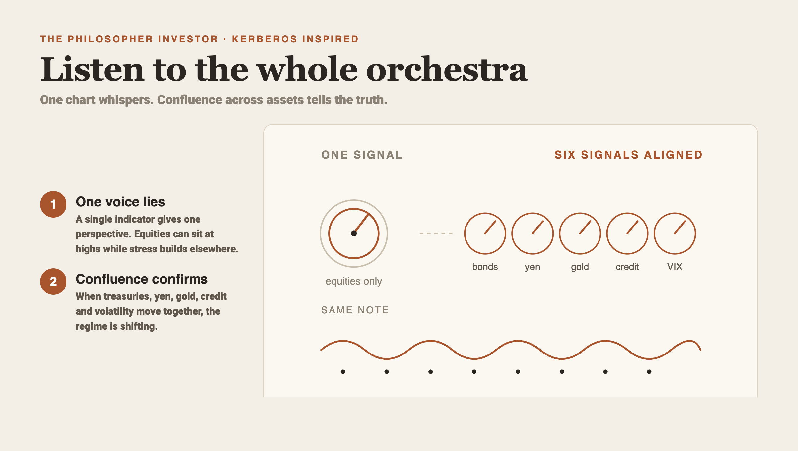
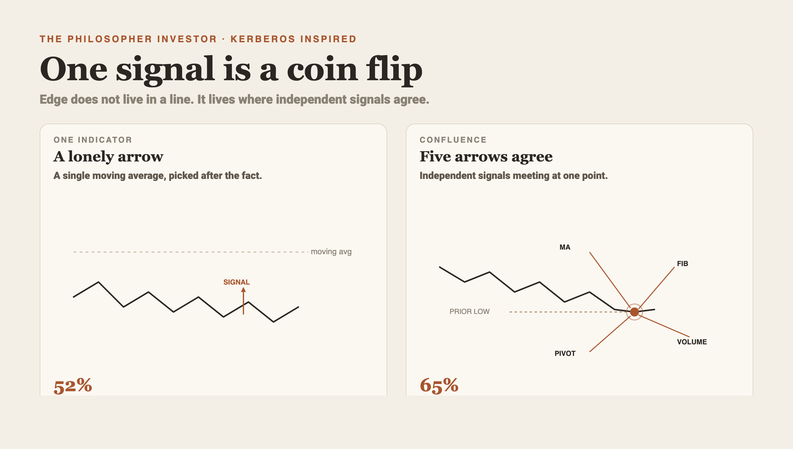
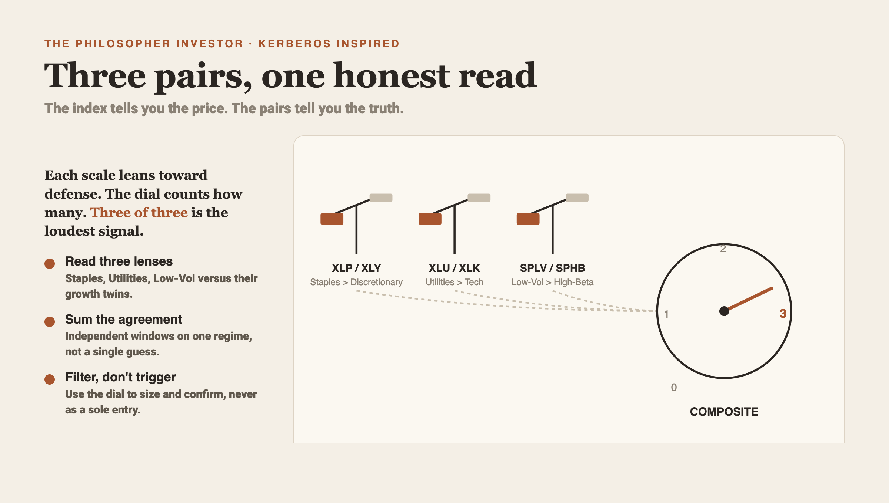
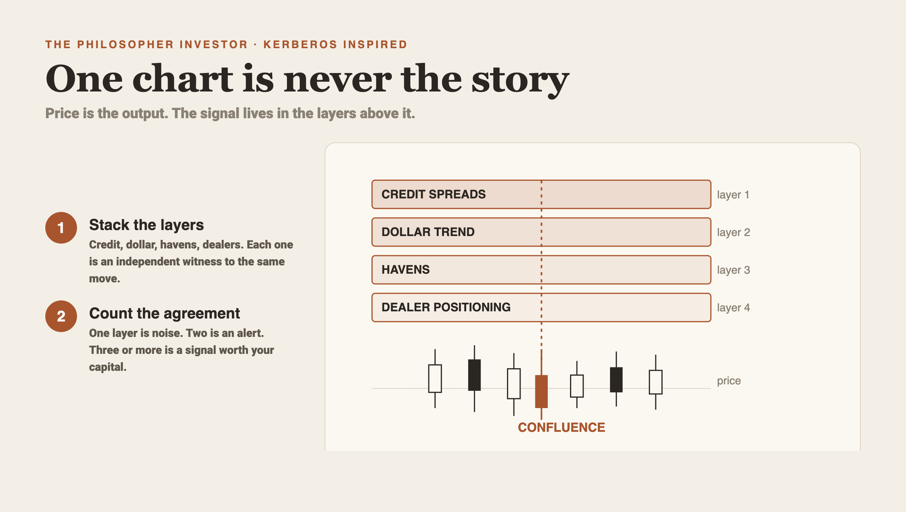
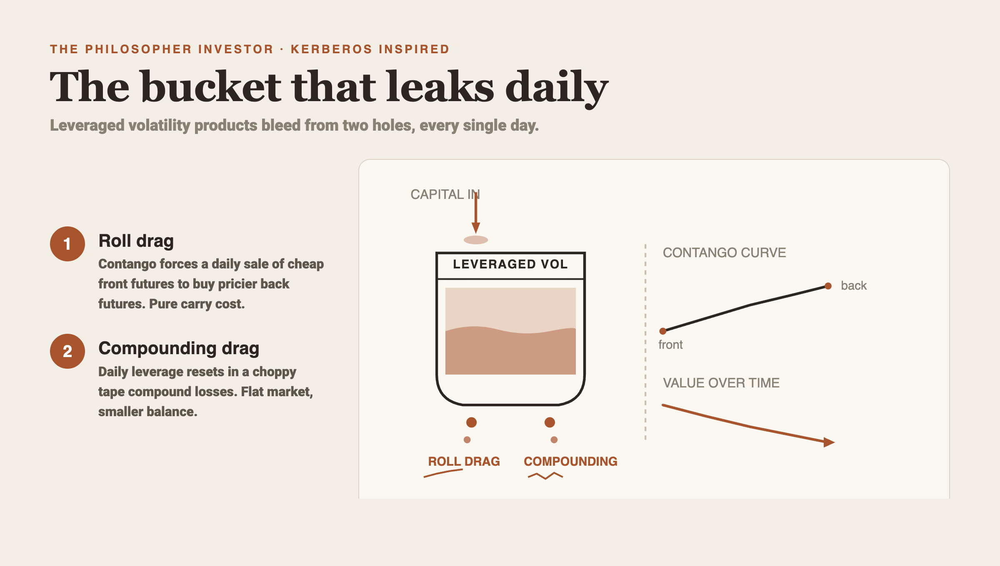
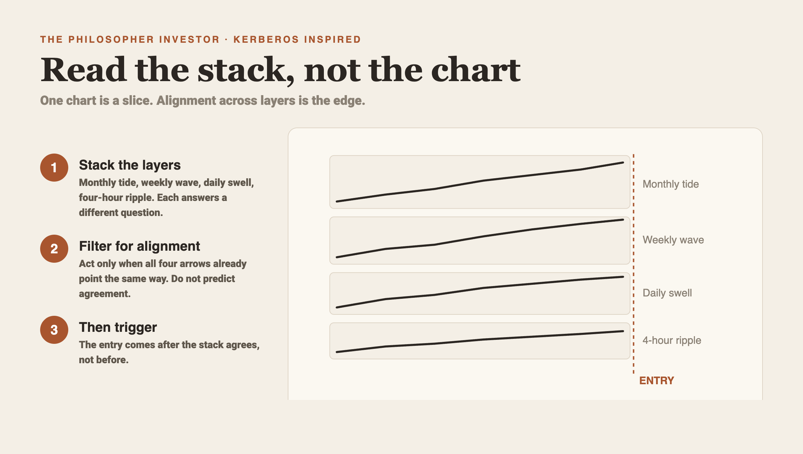

Kerberos Inspired
One timeless trading lesson a day, written as standalone educational articles ready to publish. 6 articles so far. Each piece teaches one idea in plain English, with our own backtest verdicts stated honestly: what survived testing, what did not.
Reading the Orchestra: A Cross-Asset Method for Spotting Regime Change

When you watch one chart, the market can fool you. A single indicator gives you one voice, one perspective, one signal that flashes red or green at a moment in time. Markets do not move in one voice. They move as an orchestra. Treasuries, equities, gold, oil, currencies, credit, and volatility all play together. When something important is about to change, the orchestra shifts in unison. The flute does not tell you the whole story. The whole section does.
This is the cross-asset confluence idea, and it is one of the most useful frames a retail trader can adopt.
Why a single chart lies
Imagine you watch only the S&P 500. On a calm Tuesday it sits near an all-time high. The chart looks fine. Now flip to the 10-year Treasury. The yield has dropped 40 basis points in three days. Flip to the yen. It strengthened 2.8% against the dollar in the same window. Flip to the VIX. It rose from 14 to 27 without the index even cracking.
The equity chart said calm. The orchestra said trouble incoming.
This is not theoretical. Major regime shifts almost always start outside equities. Bond markets crack first because they are larger and more sensitive to liquidity stress. Currencies move because carry trades unwind when risk perception flips. The VIX term structure inverts when dealers panic to hedge. By the time the equity index breaks down, the orchestra has been playing the new key for days or weeks.
If you watch only the index, you miss the warning. Watch the orchestra and you get a head start.
The four signatures of real stress
Every move in one market is not a regime change in the making. The cross-asset method requires alignment. Real stress shows up in at least four places at once.
First, bonds rally hard while their own volatility surges. A move where the 10-year yield drops 30 basis points in two days, and the Treasury VIX jumps 40%, is not a normal flight to quality. It is fund-level panic. Money is fleeing somewhere unpleasant.
Second, safe-haven currencies strengthen abnormally. The yen and the Swiss franc are funding currencies for carry trades. When traders short them to buy higher-yielding assets, and stress hits, those shorts get covered violently. A 3% yen rally in a single week is not a fundamentals story. It is a forced unwind. The same logic applies when the dollar strengthens against emerging-market currencies during global risk-off episodes.
Third, gold and oil decouple from their usual relationships. In normal regimes, gold and oil often move together as inflation proxies. In stress, gold rallies as a haven while oil collapses on demand fear. When you see gold up 5% and oil down 15% in the same week, that decoupling is a flag worth respecting.
Fourth, credit spreads widen ahead of equities. The high-yield credit market is forward-looking. When the spread between high-yield and Treasuries blows out by 150 basis points while the S&P sits at recent highs, credit is telling you something equities have not priced yet.
Get three or four of these signatures together, and you have a real signal. Get one alone, and you have noise. The discipline of waiting for the orchestra is what separates this method from gut trading on a single chart.
The VIX term structure tells a deeper story than the VIX level
Most retail traders watch the VIX as a single number. A VIX at 18 feels normal. A VIX at 35 feels scary. That single-number reading misses the most useful piece of information the volatility market gives away for free.
The VIX measures expected 30-day volatility on the S&P 500. There is also a 3-month VIX (VIX3M) and a 9-day VIX (VIX9D). In a calm regime, the longer-dated VIX trades above the shorter-dated one. Traders pay a premium for longer protection because uncertainty grows with time. This is called contango, and the ratio VIX3M divided by VIX looks something like 1.10.
When that ratio flips below 1.00, the term structure is in backwardation. Traders pay more for short-dated protection than long-dated. That happens when something is happening right now that demands immediate hedging. Steep backwardation, with the ratio dropping below 0.90, is the volatility market screaming.
Watching the VIX itself, you might see 35 and think elevated. Watching the term structure, you see a ratio of 0.82 and you know dealers are in panic mode. That is information one number cannot give you.
We tested this signal as part of a four-tier confluence framework on data covering 2023 to 2026. When VIX3M over VIX drops below 1.05, and pairs with at least one other volatility stress signal, the probability of a VIX spike of 50% or more within 60 days reaches 69% in our sample. The number is not magic. It is a useful tilt that comes from reading the structure, not the level.
The put/call coverage problem
A popular sentiment indicator is the CBOE equity put/call ratio. Many traders watch it daily. The problem is that the CBOE handles roughly 12.5% of total US equity options volume. The other 87.5% trades across 15 other exchanges. When you watch only the CBOE number, you are watching a small slice and assuming it represents the whole.
A total put/call ratio aggregated across all 16 exchanges tells a different story. During the worst week of March 2020, the CBOE equity put/call ratio peaked around 1.20. The total cross-exchange put/call ratio hit 1.33. The total reading exceeded the 1.52 peak from late December 2018, when the equity market was bottoming. The CBOE number alone undersold the magnitude of the hedging panic.
This is a smaller lesson inside the larger one. When you choose an indicator, ask yourself what slice of reality it covers. The biggest, broadest, most complete version of a number is almost always more useful than the most popular one. Popularity is not the same thing as coverage.
False positives and the haven filter
A composite of stress signals will fire sometimes when nothing real is happening. A technical volatility pop, a single bad headline, a one-day flush. You need a filter to separate technical noise from genuine regime shifts.
The simplest filter is to check whether havens are actually rallying. A real risk-off episode pulls money into gold, into Treasuries, and out of high-yield credit. If you see equity volatility spike but gold is flat and the Treasury market is calm, the stress is probably technical. It will fade in days. If you see equity volatility spike and gold up 3% and Treasury yields down 25 basis points and high-yield spreads widening 80 basis points, the orchestra is playing the same key. That is a real risk-off episode, and it deserves a real response.
We have tested versions of this filter on long histories. A confluence of 3 or 4 stress signals that survives a haven check has predicted the major drawdowns of the last decade with useful precision. The same confluence without the haven check produces too many false alarms. The filter is what makes the system usable.
The composite scoring approach
The practical way to build this into your process is to score the orchestra each day with a small set of binary or tiered checks. Something like this works for an individual trader:
- VIX term structure: Is VIX3M divided by VIX below 1.00? Yes equals 1 point. Below 0.90? 2 points.
- Treasury volatility: Has the MOVE index or TYVIX jumped more than 30% in the last week? 1 point.
- Carry unwind: Has the yen strengthened more than 2% against the dollar in 5 days? 1 point.
- Credit spread widening: Has the high-yield spread blown out more than 50 basis points in a week? 1 point.
- Cross-exchange put/call: Is the total US equity put/call ratio above 1.20? 1 point.
- Haven check: Are gold and bonds confirming the move? 1 point.
A score of 0 to 2 is normal noise. A score of 3 to 4 with the haven check confirming is a meaningful warning. A score of 5 or more is rare and corresponds to the kind of regime change you cannot afford to miss.
The exact thresholds matter less than the discipline of looking at the whole orchestra and refusing to act on a single voice.
What this changes about how you trade
A trader who watches only the equity index reacts to drawdowns after they happen. A trader who reads the orchestra positions earlier and with more conviction. The early signals do not give you a precise top. They give you the right to take risk off the table before the equity market confirms what bonds and currencies already know.
In practice, this means you stop sizing up when the composite reads three or higher with haven confirmation. You consider trimming long positions when the score crosses four. You think about cheap downside protection when the term structure goes deeply backward. None of these are signals to short the index aggressively. They are signals to respect risk and reduce exposure.
The mirror is also true. When the composite sits at zero or one and havens are quiet, you can size up your longs with more confidence. The orchestra is calm. The S&P chart and the bond market and the credit market are all telling the same story. That alignment is the green light a single indicator can never give you.
The honest limits of this method
The cross-asset composite is not a crystal ball. It will fire ahead of corrections that turn into nothing. It will miss flash crashes driven by isolated technical factors. It will give you a few false positives a year, even with the haven filter applied. Perfection is impossible here. The goal is to shift the odds in your favor across hundreds of decisions, so you are positioned correctly more often than not when real regime changes hit.
The method also requires patience. Cross-asset signals develop over days and weeks, never in single bars. If you are a five-minute scalper, this framework will not help you. If you are a swing trader holding positions for days to months, it can change the quality of your decisions in a way that compounds over a career.
The cost of building the composite is small. You need a watchlist of about 15 instruments across equities, bonds, currencies, credit, gold, oil, and volatility. You need a way to track each one daily, even if just visually. You need a notebook or a spreadsheet to track the score, so you can review your own discipline. That is it.
How it fits a modern workflow
A modern systematic trader uses the cross-asset composite as a regime filter on top of single-name screeners. The screener finds candidates worth a position. The composite decides what size to take and whether to take any position at all. When the orchestra is calm, you can press your edges in pullback or breakout setups at full size. When the composite is flashing warnings, you size down, you tighten stops, and you skip the lower-conviction names entirely. The composite does not pick your trades. It tells you how aggressive your book should be that week.
- A single indicator gives one voice. Markets move as an orchestra of treasuries, currencies, credit, gold, and volatility.
- Real stress shows up in at least three asset classes at once, with havens confirming the move.
- The VIX term structure tells you more than the VIX level: a ratio below 1.00 is backwardation, below 0.90 is panic.
- Coverage matters more than popularity: a cross-exchange put/call ratio beats the CBOE-only number.
- A daily composite score across five or six stress checks turns confluence into a usable risk gauge.
Why One Indicator Is Always a Coin Flip

The first time a beginner finds a moving average that "always works," something shifts in their mind. They print the chart, draw the arrows, and feel they have cracked the code. The 10-day moving average held the last three pullbacks in the S&P 500. The 20-day caught a bottom in their favorite tech name. The 50-day stopped the slide in a beaten-up small cap. A pattern, repeated, looks like proof.
This feels like discovery. It is selection bias dressed as a pattern.
Every chart in history has dozens of moving averages, Fibonacci levels, pivots, and trendlines crossing through it. Some of them line up with reversals. The eye picks the ones that worked and edits out the ones that did not. This is the same trick the brain plays when remembering "lucky" lottery tickets and forgetting the dozens of losing ones.
The opening idea of this lesson takes the longest to accept. A single indicator, used alone, sits closer to a coin flip than a trading edge. The chart looks otherwise. The math does not.
The math behind the discomfort
Pick any popular signal. The 10-day SMA bounce on the S&P 500. The RSI crossing 30. The MACD turn. Run that signal across 20 years of price data with a fixed entry rule and a fixed exit rule. You will find win rates somewhere between 48% and 55%, with average wins barely larger than average losses. After commissions and slippage, almost every solo signal lands at break-even or worse.
This is consistent. It shows up in academic studies, in private fund tests, and in the quiet drawdowns of retail accounts every year. The reason is simple. Markets are auctions of competing information. If a signal worked cleanly, professionals would arbitrage the edge away within months. What survives in the public conversation is the appearance of an edge, polished and shared, while the edge itself stays inside small private firms that never advertise.
So why does the 10-day moving average feel like it works? Because in a strong uptrend, almost any rising line will look like support. The price keeps making higher highs. Any moving average drawn through it will be touched, bounced from, and respected. Change the trend, and that same line slices through the price like a hot knife through butter. The line did nothing. The trend carried the price.
Change the indicator and the same effect shows up. The 20-day SMA looks magical in trending stocks. The 50-day looks magical in choppier stocks. The trick is that the indicator and the trend are the same observation viewed from two angles. Remove the trend, and the indicator goes flat.
The second trap: correlation looks like cause
The next stage of learning brings a more sophisticated mistake. You stop chasing single indicators and start trading relationships.
You notice two ETFs that move together. The Australian dollar and the New Zealand dollar. Two refiners in the same basin. Two mega-cap tech names. You measure their correlation and see 0.92. You think you have found the pair. You buy the laggard, short the leader, and wait for the spread to close.
Then the spread keeps widening. For weeks. For months. You hold, average down, and watch your account get cut in half.
Here is what went wrong. High correlation tells you two assets tend to move in the same direction on any given day. It says nothing about whether they share an anchor. Two stocks can both drift up by 40% over a year, perfectly correlated day to day, while the gap between them grows from 5% to 25%. Correlation stays intact. The spread explodes. Your account dies.
The deeper concept you need is called cointegration. Two assets are cointegrated when their spread is statistically stable, oscillating around a fixed average rather than wandering off. The standard test for this is called the Augmented Dickey-Fuller test. It returns a p-value. If that p-value comes back below 0.05, you can say with about 95% confidence that the spread is anchored and will mean-revert. If the p-value sits above 0.10, the relationship is unstable, and any mean reversion trade becomes a leap of faith.
Correlation is the headline. Cointegration is the receipt.
Most "obvious" pairs fail the cointegration test, even when their correlation sits above 0.85. Out of a universe of about 100 large-cap tech names tested in 2020, fewer than 30 pairs passed both the correlation filter (above 0.85) and the cointegration filter (p-value below 0.05). The rest looked tradeable on the chart. They were illusions.
What changed in 2024 and after
This matters because the pairs that worked through 2020 mostly stopped working by 2024. After concentration in mega-cap tech accelerated, many old statistical pairs lost their anchor. The Nasdaq-100 versus the Russell 2000. JPMorgan versus Bank of America. Pairs that had been clean mean reverters for a decade stopped reverting. The spreads diverged for so long that mean reversion strategies bled out before the spread ever closed.
This is the cost of skipping the cointegration test. The chart still shows two lines moving together. The relationship looks intact to the eye. Under the hood, the statistical bond has broken. The trade is no longer the trade you thought you were taking.
A working modern process tests every pair every quarter. If the cointegration p-value drifts above 0.10, the pair is retired and replaced. No exceptions. The graveyard of broken pair traders is full of people who skipped this step because the chart "still looked right."
Confluence: the actual edge
Once you accept that single signals are weak and that correlation alone proves nothing, the next question is how to build something that works.
The answer is confluence.
Confluence means a level on the chart that is independently confirmed by several different methods at once. A horizontal price level that is also a Fibonacci retracement, that is also a prior day low, that is also a high-volume node from the prior week, that is also where the 50-day moving average passes through, that is also where the volume profile shows a thick shelf of prior trading. None of these signals on its own is reliable. Together, they describe the same price for five different reasons.
When five independent methods point at the same level, the edge no longer lives inside any one method. It lives in the agreement itself.
This is the 0.55 to 0.75 win-rate territory that survives commissions, slippage, and human emotion. The edge comes from the rare price points where many independent signals collide. Hunting for those rare points is most of the work. Acting on them is the easy part.
Picture asking five strangers from different cities for directions to the same address. If two of them point the same way, that is a coincidence. If all five point the same way, you walk that way.
The four pillars of a real edge
A practical trading edge sits on four pillars. Each one matters. Removing any one breaks the structure.
Probability. You need to know, from historical testing, what your win rate looks like across the conditions you trade. Vague hope is not a measurement. If you have not measured a setup across at least 200 historical examples, you have a feeling rather than a probability.
Psychology. The hardest trades to take are the ones your testing tells you to take. They feel scary at the entry and frustrating at the exit. The mind looks for reasons to override the plan. Without an honest awareness of your own emotional patterns, even a winning system fails on execution.
Discipline. A rule you follow every single time is worth more than a brilliant rule you follow most of the time. Returns compound. Mistakes compound harder. A 65% win-rate system run with 80% discipline produces a real win rate around 52%, which is closer to break-even than to winning.
Confluence. The edge sits in the rare locations where multiple independent signals agree. Hunting for these locations is most of the work. Trading them is the easy part.
A trader with all four pillars in place can run a 52% win-rate system to a comfortable yearly return. A trader missing any one pillar can run a 70% win-rate system into the ground.
Risk management as the silent multiplier
A fifth idea wraps around everything else. Risk-to-reward.
If your average winner is 2 times your average loser, you can be wrong 55% of the time and still grow your account. If your average winner is the same size as your loser, you need to be right 55% of the time to break even after costs. If your average winner is half the size of your loser, you can win 65% of the time and still bleed slowly.
This is why position sizing and stop placement carry at least as much weight as signal selection. A great signal with a 1:1 payoff structure is a marginal trade. A mediocre signal with a 3:1 payoff structure is a great trade.
A practical filter: refuse any trade where the planned reward is less than 2 times the planned risk. This single rule will cut the number of trades you take by maybe 60%. The trades that survive the filter do most of the work in any account.
The two-trap lesson in one paragraph
The two ideas in this lesson sit closer together than they appear. A single moving average is a single signal. A single pair, picked on correlation alone, is also a single signal dressed up in math. Both look attractive in the moment. Both leak money over time. The solution in both cases is the same. Layer multiple independent tests, accept that the result is far fewer setups, and rely on those rare alignments to do the heavy lifting in your account.
A test you can run today
Take any setup you currently use. Write down, in plain English, the exact entry condition and the exact exit condition. Go back through the last 50 times that setup appeared in your data. Mark every outcome. Count the winners and losers, measure the average size of each, and compute your real win rate and your real average win-to-loss ratio.
Most traders never do this. The ones who do are usually shocked by how different the results are from what they remembered. Memory is biased toward the trades that confirmed the system and away from the trades that broke it.
If the numbers are not there, you do not have an edge. You have a story you tell yourself to keep trading.
Why this keeps mattering
The temptation to chase magic indicators has grown stronger over the past two years. Social media now amplifies any signal that "called" the last three market moves. The selection bias is industrial. By the time a "magic indicator" appears in your feed, it has usually already failed the next round of tests, and those failures never get posted.
A useful filter: anytime someone shows you the indicator that called every top or bottom, ask for the false-positive count. Ask how many times the same signal fired and was wrong, and what the average drawdown looked like on those false signals. If they cannot answer, the signal exists only as marketing. The number of independent tests it has survived matters more than the picture they show you.
How it fits a modern workflow
Build a screener that scores each candidate trade by how many independent signals agree at the same price. Pair that scoring with a strict risk-to-reward filter, position-sizing based on volatility, and a quarterly retest of any statistical pair you rely on. The market will keep offering indicators that look magical. Your job is to act only when several of them point at the same address.
- A single indicator on its own performs close to a coin flip after costs, regardless of how clean it looks on a chart.
- High correlation between two assets is not cointegration. Mean reversion trades need the spread to pass the Augmented Dickey-Fuller test with p-value below 0.05.
- Retest every statistical pair quarterly. Pairs that worked through 2020 mostly broke by 2024 after mega-cap concentration shifted the anchors.
- The real edge lives in confluence: rare price points where five or more independent signals agree, scored explicitly in a screener.
- A 2:1 reward-to-risk filter does more work than chasing higher win rates. Refuse trades that fail it.
Three Pairs That Tell You What the Index Is Hiding

An index sets a new high. The headlines all read bullish. You glance at your portfolio and feel good about your positioning.
Then a careful friend asks a simple question: what's actually working underneath that move? You look closer. Maybe utilities and staples carry most of the weight. Maybe a handful of giant tech names do all the lifting. The index moved up, but the way it moved up tells a story that the level alone never could.
This article teaches a single discipline: read the market through several complementary lenses at the same time, instead of believing the index price. Done well, this one habit changes how you think about regime, timing, and risk.
The three kinds of rally
There are roughly three ways an index goes up. The first is a broad rally: most stocks participate, most sectors lift, and the move looks evenly supported. The second is a narrow rally: a handful of mega caps carry the index while the rest of the tape stagnates. The third is a short squeeze: heavily shorted names jump as forced buyers cover positions.
All three print the same green line on the index chart. The difference between them matters more than almost anything else for the trader trying to figure out whether to add risk, take profits, or hedge.
Breadth indicators help. They count how many stocks advance versus decline, measure cumulative volume on up days versus down days, and watch how many names hit new highs. When the index pushes higher while breadth stalls, the rally is narrower than the price suggests. That divergence is one window into what the index is hiding.
Another window is sector rotation, and that's where this article spends most of its time.
Three defensive versus growth pairs
Pick three pairs of sector ETFs. On one side of each pair, a defensive name. On the other side, a growth or high-beta name.
- XLP versus XLY: consumer staples against consumer discretionary
- XLU versus XLK: utilities against technology
- SPLV versus SPHB: low-volatility S&P names against high-beta S&P names
Each pair compares a slow, dividend-heavy, lower-volatility part of the market against a faster, more cyclical part. Rank each pair by recent performance over a longer window, such as 1 year. If defensives are ahead on a pair, score it 1. If growth is ahead, score it 0. Add the three scores. The composite ranges from 0 (full risk-on across the board) to 3 (full defensive leadership across the board).
That single number tells you something the index level cannot. It tells you whether the move you're seeing is supported by risk-taking or carried by risk-aversion.
Why a composite beats a single pair
Markets feed you a steady diet of one-signal stories. The yield curve inverted. Tech leadership cracked. Utilities surged. Each item lands with confidence. Each gets repeated for a week. Then the market goes the other way and the storyteller moves on to the next single-signal story.
The problem with one signal in isolation is that any single comparison can reflect a dozen things that have nothing to do with the broad market. Utilities can outperform tech in a given month because a rate move favored bond proxies. Tech can lag because one giant name in the sector took a regulatory hit. Watching XLU against XLK alone, you cannot tell whether the move means anything beyond noise.
Now add the second pair. If XLP also leads XLY in the same window, you have two independent windows pointing the same way. Add the third pair, and the case for noise weakens further. Three windows showing the same picture is much harder to wave away as coincidence.
The strength of the composite comes from the independence of its parts. Each pair samples a different part of the market: the consumer through staples versus discretionary, the rate and growth complex through utilities versus tech, the broad factor read through low-vol versus high-beta. When all three agree, you're seeing something close to a regime, not a sector quirk.
What testing the composite actually showed
The original interpretation of this composite was bearish. Defensives leading growth feels late cycle, feels cautious, feels like an institutional shift toward safety. So the surface read was: composite at 3, get defensive yourself.
We ran the numbers to check. The backtest covered eleven sector ETFs plus SPY going back to 2016, with a forward horizon of 60 days. The honesty bar was a permutation test with 5000 shuffles plus a Bonferroni correction across buckets, then a cross-check against documented bear markets.
The data delivered an inversion. When the composite hit 3 (all three defensive pairs leading at once), the next 60 days of SPY returns came in around +11.31% on average, with a confidence interval of +9.15% to +13.51%. The sample was small, 36 observations, but the direction was consistent across the window we tested.
So the composite was real. The interpretation needed work.
Once you slow down, the result makes sense. By the time three independent pairs flip in favor of defensives at the yearly level, most of the bad news is already priced. Utility owners look smart in hindsight. High-beta holders have already taken the pain. Positioning across the index is one-sided. That's the setup for a snapback rather than the start of a fresh leg down.
What looks like a sell signal at the index level reads more like a contrarian buy signal once you measure it properly.
What the pairs actually measure
Step back from the table for a moment. What is the composite picking up?
Each pair compares a defensive corner of the market against a more cyclical corner of the market. Staples against discretionary tracks the consumer's mood. Utilities against tech tracks where rate-sensitive yield buyers and growth-sensitive equity buyers are placing chips. Low-volatility against high-beta tracks broad risk appetite at the factor level.
Each pair is one window on the same underlying picture: where the crowd is putting its money. Three windows showing the same picture in the same direction means the picture is real. Three windows showing different pictures means you have noise.
That is the entire intuition. Composite signals beat single indicators because each indicator catches a different slice of the same underlying truth. Aggregating the slices lets the signal rise above the noise.
How to use the composite in practice
Start with the data. Pull monthly and yearly returns for the six ETFs that make up the three pairs. Build the pairs. Score the composite. Track it over time.
Then use the composite in three ways.
One: as a regime filter. When the composite reads 3 for several days in a row, favor contrarian setups: oversold bounces, beaten-down sectors, mean-reversion entries. The crowd is already positioned defensively. The fuel for a rally is sitting on the sidelines.
Two: as a confirmation tool. When you have a setup based on something else (a breadth thrust, a sentiment extreme, a credit spread that widened to a level you respect), check the composite. Three pairs aligned with your setup raises confidence. One pair aligned with two against lowers confidence.
Three: as a sizing input. If your setup wants you long but the composite is at 0 (risk-on everywhere), size smaller. The crowd is already on your side and the upside compression is real. If the composite is at 3, you can size more confidently. Rebounds from extreme defensive positioning tend to be sharper than rallies from already-bullish setups.
None of this asks you to trust the composite blindly. It's one input in a confluence stack. Use it the way a careful pilot uses an instrument: cross-check it against other instruments and price action, and never fly on it alone.
The most common mistakes
The mistake we see most often comes from confusing the trigger with the trade. A composite jumping to 3 does not tell you to buy SPY tomorrow morning. It tells you the setup conditions for a contrarian rally are present. You still need a clean structure, a stop level, and a position size you can survive.
The next mistake comes from anchoring on the headline interpretation. Walk into any financial news segment on a day when defensives lead growth. The talk will all be about late-cycle risk and rotation into safety. The talk is correct about the rotation. The talk is often wrong about what comes next. Defensive leadership has worked as a contrarian buy signal much more often than as a sustained bear warning over the past decade of US equity history.
The third mistake comes from ignoring the time frame. A composite computed on 1-month data tells a different story than one computed on 1-year data. The original three-pair framework used yearly performance because yearly rotation captures regime, not noise. If you use shorter windows, your composite will hit 3 more often, and a large fraction of those readings will mean nothing.
The fourth mistake comes from treating the composite as a permission slip. Reaching 3 is permission to look for opportunities, not permission to skip stops or oversize positions. Contrarian setups can take time to develop. Plenty of 3 readings have happened weeks before the actual low. Discipline still applies.
Building your own version
The three-pair example is a starting point. You can substitute or extend.
- IYR versus XLF for a real estate against financials read
- VYM versus IWO for high-dividend value against small-cap growth
- EFA versus EEM for developed markets against emerging markets on the international side
The principle holds. Pick pairs that span different segments of the market. Score each pair the same way. Sum the composite. Test it.
What you should avoid is adding ten pairs and selecting the combination that produced the best-looking backtest. That's curve fitting. Three pairs is a clean number because it asks for agreement across a small set of orthogonal windows. Adding more pairs that overlap with the originals (say, three different versions of staples against discretionary) gives the illusion of confirmation without adding any new information.
The other discipline is to keep the buckets simple. A composite that runs 0 through 3 with clear thresholds is easier to test and easier to use than one with a continuous score and arbitrary cutoffs. Simpler systems hold up better out of sample because there are fewer free parameters for the market to break.
What the original framing got right and what testing changed
The original framing got the structure right. Composite beats single indicator. Three independent windows beat one window. Defensive against growth captures something the index level hides. Sector rotation is information the price chart simply does not contain.
Testing changed the direction of the signal at extreme readings. The composite at 3 is closer to a contrarian buy than to a trend-following sell. That correction matters. A trader who shorted every defensive-leadership extreme would have been carried out repeatedly on the snapback. A trader who bought carefully into those moments, with confluence and risk management, captured a real and repeatable edge.
This pattern appears in almost every signal worth testing. The original idea points to something real. The original direction sometimes needs adjustment. The original numbers usually need tightening. None of that diminishes the framework. It just means you cannot skip the testing step and trust the headline interpretation.
The whole habit of reading several windows at once instead of one indicator at a time is the durable lesson. Pick your windows. Make them complementary. Watch what happens when they agree. Then check the data to see whether agreement at the extremes is a sell or a buy. The honest answer usually surprises you.
How it fits a modern workflow
The defensive composite sits in the regime layer of a modern stack: screeners surface individual candidates, confluence checks the macro and sentiment backdrop, and position sizing scales with the strength of the read. When the composite hits 3 alongside an oversold breadth thrust or a sentiment extreme, conviction climbs and size can lift. When it sits at 0 with euphoric breadth, you trim risk and stand aside until the air comes out. The composite never makes the trade by itself; it sets the temperature you trade at, and that's where the long-term edge lives.
- An index up move can be broad, narrow, or short-squeezed: the level alone cannot tell you which.
- Three defensive-vs-growth pairs (XLP/XLY, XLU/XLK, SPLV/SPHB) form a 0-to-3 composite that reads what the index hides.
- Testing back to 2016 showed all three pairs defensive (composite = 3) preceded SPY gains around +11.31% over the next 60 days, not losses.
- Composite signals beat single indicators because independent windows agreeing on the same picture filters out noise.
- Use the composite as a regime filter, a confirmation tool, and a sizing input; never as a standalone trigger.
Reading Markets in Layers: Why One Chart Is Never the Whole Story

A single chart feels complete. You see green or red, support or resistance, breakout or breakdown. The story seems obvious. That confidence is the most expensive feeling in trading.
Price is the output. The inputs sit elsewhere. Every candle is the residue of millions of decisions: who hedged, who covered, who got margin-called, who held. Trading off price alone means reading a summary of a story whose chapters live in other places. In the options book. In credit spreads. In the dollar. In sector rotation.
This piece teaches how to read those other chapters. The ones that explain why price did what it did. The ones that warn you before price moves at all.
What makes a price level real
Beginners draw horizontal lines on a chart and call them support or resistance. The line works sometimes. When it does, the trader gives credit to the line. When it fails, the trader blames the market. Both reactions miss the point.
Levels are made by positioning. Chart geometry rides on top of that fact. Picture a broad index trading near a round number such as an SPX cash equivalent of 2700. If options dealers are short hundreds of millions of dollars of put premium struck at that level, they have a strong economic reason to defend it on the way down and to ride it lower if it breaks. The level is real because of the cash flows tied to it.
The same logic works above price. When heavy call open interest sits at a strike that translates to roughly 275 on SPY (about 2754 on the futures), dealers who sold those calls grow short gamma as price climbs toward the strike. They hedge by selling the underlying. Price stalls. Day after day, you watch the same resistance hold, and it looks magical from the outside. The mechanism is mechanical.
The takeaway is simple. Before you trust a chart level, ask what positioning sits on top of it. If real money is parked there, the level matters. If nothing is parked there, the line on your chart is a coincidence.
Confirmation by other assets
Once you accept that price is the output of positioning, the next question is whether other assets agree with the move.
Late 2018 offered a clean example. The broad market fell hard in October and December. Many traders saw the equity drawdown and asked the standard question. Is this a buyable dip or the start of something worse? Price alone could not say. Credit could.
Three credit instruments tracked equity weakness with 30-day correlations that stood out. Senior loans (BKLN) showed a correlation near negative 76%. High yield bonds (JNK) printed near negative 80%. The widely watched HYG ETF posted near negative 84%. Sign conventions vary by source. What you should read in those numbers is alignment: high yield and equity were selling off together, day after day, with very little daily disagreement between them.
When credit and equity bleed together, you are looking at a real risk-off episode. Dealers, banks, and funds that mark daily are forced to reduce gross exposure across books. They sell what is liquid first. They sell what is needed second. Equity weakness fed by credit weakness has staying power.
When the broad market drops while credit holds firm, the read flips. You may be seeing a technical washout, a vol-pop, a futures stop run. Painful, yes. Sustained, often no.
The discipline is refusing to read the equity tape in isolation. Pull up at least one credit chart every time you assess a sell-off. The five seconds you spend on HYG and JNK could save you from selling the bottom or buying a falling knife.
The chain of causes
Cross-asset reading goes further than confirmation. Many moves you see in one asset are the downstream effect of a chain of causes that started somewhere else.
Take a late-cycle chain. A central bank raises rates. The currency strengthens. Commodities priced in that currency face a headwind because foreign buyers find them more expensive. Energy prices ease. Anything whose cost of production depends on energy benefits or suffers depending on which side of the input chain it sits.
Bitcoin in late 2018 offered an unusual case study. Mining costs are dominated by electricity, and electricity prices follow energy. When the US dollar climbed, oil weakened, and the cost of mining a coin softened. That softer cost let weak hands among miners keep selling without going under, which prolonged the supply pressure on price. The chain ran from monetary policy to currency to energy to mining economics to coin supply.
Memorizing every chain is unrealistic. The habit you build is asking, before you trade an asset, what sits upstream of it. Short on oil? Care about the dollar. Long on crypto? Care about the cost of compute, which means energy, which means oil. Long on emerging market equity? Care about the dollar and the Chinese growth impulse. Every asset has a parent.
Confluence levels in currencies
Currencies offer some of the clearest examples of made levels, because central banks and policy regimes openly tell you which line they care about.
In late 2018, the dollar-yen pair traded near 110.00. That round number sat at a known confluence of moving averages, prior swing points, and policy attention. Short sellers stalked the level all day, waiting for a clean break. Bulls defended it as long as they could. When 110.14 finally broke on a quiet session, the path of least resistance opened. Once enough committed defenders covered, the fuel for the next leg came from their forced exits. The move was mechanical.
That is the second use of confluence reading. A level becomes a battle line because participants have agreed to treat it as one. Trade size builds against it on both sides. When one side folds, the resulting move is larger than the new information would justify on its own. Almost all sharp intraday moves in major pairs around round numbers carry this signature.
The retail mistake is fading these moves on price action alone. The professional habit is identifying the confluence before the day starts, setting a plan for both outcomes (level holds or breaks), and sizing the trade to survive a fakeout in either direction.
The composite reading discipline
Pulling these ideas together gives you a workable discipline. Call it composite reading. It rests on three habits.
First, refuse to let a single asset tell you the full story. Before you accept that equities are weak, check credit. Before you accept that the dollar is strong, check the cross rates. Before you accept that volatility is rising, check the term structure and the skew, beyond the headline VIX print.
Second, grade signal strength by how many independent layers agree. One layer is noise more often than not. Two layers is an alert. Three or more layers aligned is a signal you can act on with conviction. Different traders calibrate the exact threshold, and some regimes never offer three clean confirmations. You must be willing to stand aside when the layers disagree.
Third, put a hard filter on top of any composite. Even when most layers agree, ask one question that could veto the trade. For risk-off setups, that question is whether the classic havens are rallying. Gold should hold or climb. Treasuries should hold or climb. Defensive sectors should outperform cyclicals. If at least one of those flight-to-quality moves is missing, treat the apparent risk-off as suspect. Real macro stress shows up across asset classes, beyond your favorite chart.
A worked example
Picture an evening in December. The broad market has dropped roughly 2% intraday and is sitting on a level you have been watching. Your gut says buy the dip. Before you click, run the composite check.
Layer one is credit. You pull up HYG. It closed down 1.4% on heavy volume, a fresh low for the move. JNK matches. That layer disagrees with the dip-buy thesis.
Layer two is the dollar. You pull up the DXY. It is up 0.6% and broke a multi-week resistance. That layer also disagrees.
Layer three is havens. Gold is up 0.8%. The 10-year Treasury yield is down 6 basis points. Both are doing exactly what you would expect in a real risk-off move. Another disagreement with the buy.
Layer four is positioning. You check the dealer gamma profile. The major weekly call wall sits 3% higher. The put wall sits 2% lower. There is no major dealer support at the current level. Disagreement again.
Four layers, all aligned in the same risk-off direction. The dip-buy is fighting the entire tape. You could still take the trade, only with much smaller size and a tight stop, accepting that you are explicitly fading a unified read. More often, the right call is waiting, watching the layers, and acting when at least two of them flip back in your favor.
Now flip the example. Same intraday drop, but HYG closes flat, the dollar fades, gold and bonds do nothing special, and you see a fresh call wall building at the level you are considering. Three layers now disagree with the bearish read of price. The drop looks technical. A small dip-buy with a planned exit if HYG breaks down later is a defensible trade.
Same chart. Same level. Two opposite trades, each justified by what the other layers were doing.
What this protects you from
The honest reason to do composite work is that it protects you from your own bias. A single chart in a single timeframe is the kind of input your brain interprets through whatever story you started the day with. Five charts across asset classes are harder to twist. The discipline is a forcing function for humility.
Composite reading also protects you from headline trades. The setup that looks irresistible on a five-minute clip rarely passes a four-layer check. When you commit to running the check before each trade, the number of trades you take drops sharply, and the average quality of the ones you take rises. Fewer trades at higher quality is the math of survivability.
Last, composite reading protects you from timeframe confusion. A daily chart says one thing. A weekly chart says another. The same happens across assets. When you see clean alignment from intraday positioning, daily credit, and weekly dollar trend, you are seeing a setup with weight across horizons. That is the kind of trade you can hold through noise.
How it fits a modern workflow
A practical workflow builds a daily dashboard that pulls four or five layers you care about: equity breadth, credit spreads, dollar trend, options dealer positioning, and your defensive sector basket. Score each layer with a one-word verdict such as constructive, neutral, or defensive. When three or more layers agree, run a screen for setups that match that bias. When the layers disagree, default size shrinks, the stop tightens, and you focus on shorter holds. The screener finds candidates. The composite read decides which ones earn a position and how big.
- Chart levels become real because of the positioning behind them, so always ask what cash flows are parked at the line before trusting it.
- Pull up at least one credit chart before trading any equity sell-off; credit confirms or rejects the risk-off story price is telling you.
- Every asset has a parent. Identify what sits upstream (rates, dollar, energy) before sizing a trade in the child asset.
- Grade conviction by how many independent layers agree: one is noise, two is an alert, three or more is a signal worth committing capital to.
- Apply a haven filter to risk-off reads. If gold and Treasuries are not rallying, the move is probably technical and not a real macro break.
The Two Hidden Drags Built Into Every Leveraged Volatility Product

Most retail traders learn about volatility by accident. They buy a put hedge during a calm Tuesday and watch it lose half its value by Friday even though the market did not move. They buy a leveraged volatility product at 18 after a scary headline, the broad market drops 2%, and somehow their position is flat. Then the market recovers, the volatility wrapper drifts back, and three months later they are down 40% while the broad market is up 6%.
The bleed is structural. Two forces drain those products every single day. The first one is well known and rarely understood properly. The second one is almost never discussed and is the more dangerous of the two. Today we explain both with simple math, then we cover the only disciplined way to trade products that carry these forces inside them.
The first drag: paying the carry on fear
Start with the volatility index itself. The index is not a tradable asset. You cannot buy a unit of it. What you can trade are futures on the index, options on those futures, and ETFs (or ETNs) that hold those futures.
Volatility futures behave differently from spot volatility. Most of the time they sit in a state called contango, which means the further-dated contract trades higher than the front-month one. The futures curve slopes up.
Here is a typical example. Spot volatility prints 15. The next month future trades at 16. The month after that trades at 17. The one beyond that trades at 18. The market is saying it expects more uncertainty later than now, so later-dated insurance costs more.
Products that track these futures must roll their positions forward to stay near a one-month or two-month average maturity. They sell the front contract, which is cheap, and buy the next one, which costs more. They are forced to sell low and buy high every single day.
This is the roll drag. In a quiet market with spot volatility flat, a long-volatility product can lose 5% to 10% per month from this alone. Nothing happened in the world. The position bled anyway.
In backwardation (front contract higher than the next), the math flips and the roll becomes a tailwind. Backwardation is rare. It shows up during real stress and rarely lasts more than a few weeks.
The lesson here is simple. If you buy any long-volatility product and the world stays normal, you are paying a continuous toll. The toll does not show up on your screen as a line item. It is baked into the price.
The second drag: the math of daily compounding
Now we get to the part that ruins more accounts than any other single feature of modern markets.
Take a 2x leveraged product. It promises to move 2x the daily change of whatever it tracks. Sounds fine. Goes up 5%, you get 10%. Goes down 3%, you lose 6%. The trap is what happens over time.
Daily compounding hurts when the underlying chops around. Walk through the math slowly because it matters.
Imagine the underlying does this over four days:
- Day 1: down 10%
- Day 2: up 10%
- Day 3: down 10%
- Day 4: up 10%
After four days, where is the underlying? Start at 100. Day 1 takes it to 90. Day 2 takes it to 99. Day 3 takes it to 89.1. Day 4 takes it to 98.01. You ended at 98.01, down about 2% from the start, because alternating up and down compounds slightly negative.
Now the 2x product on the same underlying. Day 1: down 20%. Day 2: up 20%. Day 3: down 20%. Day 4: up 20%. Start at 100. Day 1: 80. Day 2: 96. Day 3: 76.8. Day 4: 92.16. You ended at 92.16, down almost 8%.
The underlying lost about 2%. The 2x product lost 8%. That 6% gap is the volatility drag.
A 3x product on the same path would have lost about 17%. The drag grows nonlinearly with leverage. The choppier the underlying, the worse the bleed.
Now apply this to a long-volatility product. Volatility wrappers are the choppiest part of the market. The underlying futures move 3% to 8% on a normal day. A 2x wrapper on something that moves that much, with that much daily reversal, will lose value even if the underlying ends the year exactly where it started.
Stack the roll drag on top of the volatility drag and you have a product engineered to grind toward zero. The long-term charts of these wrappers, after multiple reverse splits, show near-vertical decline over years. That trajectory comes from mechanics, not from market opinion.
Why this matters for the long side
If you want to buy volatility as a hedge, fine. Be honest with yourself about three things.
First, you are paying daily rent. If nothing happens, your hedge erodes faster than the calendar suggests.
Second, you need volatility to spike hard and fast. A slow grind from 15 to 18 over two months will not save you, because the two drags will eat the move.
Third, your hedge has a usable life of a few weeks at most. Holding a leveraged long-volatility product for months as insurance means paying for a fire extinguisher that secretly drains itself in your closet.
The cleanest rule is this. Only initiate a long-volatility position when implied volatility on the product itself is unusually cheap. There is a measurable way to define cheap.
The two numbers that tell you when volatility is mispriced
Every options trader should keep two numbers on screen for the products they touch.
The first is IV30, the 30-day implied volatility of the options. This tells you what the market currently charges for one-month options on that product.
The second is the one-year range of that IV30. Where does today's reading sit inside the last 252 trading days of readings? This is often called IV rank or IV range rank, and shows up as a value between 0% (cheapest of the year) and 100% (most expensive of the year).
A reading like 8% means today's implied volatility is in the bottom 8% of the past year. Options are dramatically cheap. The market is sleeping.
A reading like 90% means today's implied volatility is in the top 10% of the past year. Options are dramatically expensive. The market is scared.
These two numbers are your context. Without them, you cannot tell if an option is a bargain or a rip-off, because the same dollar premium can mean either thing depending on regime.
The disciplined approach uses two hard rules.
Rule one for getting long volatility. Only buy options or long-delta structures on a leveraged volatility product when its IV30 sits in the low part of its range, say below the 10th range rank of the last year. You want to pay almost nothing for the option because the structural drags work against you and the underlying chops a lot. Cheap entry compensates for the bleed.
Rule two for getting short volatility. Only sell options or take short-delta structures when IV30 is unusually elevated, say above the 130 mark on a high-vol wrapper, AND the futures curve has flipped into backwardation, AND that implied volatility has started to roll over.
The last condition is where most traders die. They see the volatility index at 35 and decide to short it. The next day it prints 45. The day after, it prints 55. They get carried out.
The rule is: do not catch the falling knife. Wait for the implied volatility to turn down, not only to be high. High and rising is dangerous. High and rolling over is the moment. The discipline costs you the first few percent of the move down in exchange for surviving the upside.
This single rule, applied consistently, separates traders who collect premium for years from traders who collect it for nine months and blow up in the tenth.
The earnings cycle on individual names
The same lesson plays out on single-name stocks around earnings, in a more visible way. Implied volatility ramps up in the weeks before an earnings release because the market knows a number is coming and prices uncertainty. The IV30 on a high-beta name can climb 30% to 50% ahead of the report.
The moment earnings drop, the unknown becomes known. Implied volatility collapses, often within hours, back toward its pre-earnings baseline. This is the famous vol crush.
A trader who buys an at-the-money straddle the day before earnings is paying for both the directional move and that bloated implied volatility. The stock can move 3% in the right direction and the straddle still loses money, because the vol crush takes more value out of the premium than the move puts in.
The same two numbers apply. If IV30 sits in the bottom of its yearly range three weeks before earnings, buying options is cheap and you have time for them to gain value as the ramp begins. If IV30 sits in the top of its yearly range the night before earnings, you are paying full retail and the math will fight you.
The takeaway is the same one as before. Pay attention to where implied volatility sits inside its own one-year history. The dollar premium of the option means nothing without that context.
Defined risk, always
Once you are at an extreme that meets the rules, the second question is the structure.
For the long side at extreme low implied volatility, the cleanest plays are long calls or long call spreads. Both have defined risk. You know what you can lose. You bought cheap options. If volatility spikes, your structure converts into a usable hedge.
For the short side at extreme high implied volatility that has started to roll over, the cleanest plays are short out-of-the-money put spreads if you expect the volatility wrapper to fall, cash-secured short puts if you want to own the underlying, or out-of-the-money bear call spreads on the leveraged volatility product because the structural drags will help your short bet.
Notice what is missing from this list. No naked short calls. No naked short puts. No undefined risk.
The reason has a date. February 5, 2018. That day, the volatility index exploded from a calm 17 to a panic 38 in a single session, and several short-volatility funds were vaporized. Anyone short calls on a leveraged volatility wrapper without a long-call hedge above them lost more than the position size. The structural drags are real, and they assume you survive the spikes. Defined risk is the only way to survive the spikes long enough to collect the slow bleed.
When to roll, when to take the loss
One more piece of discipline. The strategy of selling out-of-the-money bear call spreads on a leveraged volatility product needs a plan for when the trade goes against you.
The plan is simple. Pick the short strike of your spread above the third-highest open interest call strike for that expiry. Open interest acts like a fence. Big concentrations of contracts at a given strike often work as soft resistance, and the third-highest reading places you well above the busy zone.
If the price violates the highest open interest level, you do not wait. You roll the spread out to a later expiry and up to a higher strike, immediately. You do not hope. You do not check the news. You roll on touch.
In the worst case, you might roll twice in a row before the trade finally expires worthless. The math works because the structural drags keep working in the background every day. Your defined-risk structure plus a hard roll rule lets you stay in the trade through the spike without taking a fatal loss.
If you cannot stomach the discipline, do not sell premium on volatility products. The structural edge exists, the path is non-linear, and your behavior during the path determines whether you keep the edge.
How it fits a modern workflow
In a modern setup, the two-number framework becomes a screener. You scan a basket of high-volatility products daily for IV30 readings in the bottom or top decile of their one-year range, then check the futures curve for the confirming signal, then check whether implied volatility has started to roll over before any short-vol entry. You size each idea so that one wipeout cannot break the account, and you predefine the roll rule for every short-premium structure before opening it. None of this is intuition. It is a small number of measurable inputs, a few hard rules about when to act, and a written exit plan that compounds the only thing worth compounding: discipline.
- Long-volatility products pay a daily toll from contango roll and a separate daily toll from leverage compounding in a choppy market.
- Two numbers tell you when options are mispriced: IV30 today and where IV30 sits inside its own one-year range.
- Only buy volatility when implied volatility is cheap in its own range. Only sell volatility when it is rich AND has started rolling over.
- Never use naked positions on volatility wrappers. Use defined-risk spreads and predefine the roll rule before you open the trade.
- Earnings vol crush is the same lesson on a single name: paying for high implied volatility right before a known event almost always loses to the math.
Read the Stack, Not the Chart

Most arguments about trading are arguments about the wrong thing. Two traders look at the same chart and disagree. One sees a clean uptrend. The other sees a topping pattern. Both are looking honestly. Both can be right at the same time.
The reason is simple. They are looking at different timeframes.
A stock can be in an obvious uptrend on the weekly chart and in a sharp pullback on the 4-hour chart in the same minute. Both views are accurate. They answer different questions. Yet most retail traders never pick which question they're asking, so their entries and exits drift between time horizons. They buy on the 4-hour signal and panic on the 15-minute noise. They cut winners early because the daily chart looked scary on a Tuesday afternoon.
Today's lesson is about fixing that mess. The fix lives in picking a stack of charts, then reading them in order.
The four-layer chart in your head
Every price you see lives inside a nested stack of timeframes. The tide moves slowly. Inside it, large waves rise and fall over weeks. Inside those, small waves move daily. And on top of all of that, ripples chop around hour by hour.
If you trade ripples, you need the wave underneath you flowing the same direction. If you trade waves, you need the tide on your side. Ignore the layer above the one you trade and you're surfing into the rocks.
A useful version of the stack for a swing trader looks like this:
- Monthly chart sets the long structural direction. Is the asset in a multi-year up, down, or sideways regime?
- Weekly chart sets the swing context. Is the current move flowing with or against the structural direction?
- Daily chart sets the setup. Is there a pullback, a base, or a fresh trigger forming?
- 4-hour chart sets the entry. Is momentum aligned right now, today?
You can swap the layers for shorter holding periods. Day traders use 60-minute as their large wave and 5-minute as their trigger. The exact numbers matter less than the principle. Use roughly 4 to 6 lower-timeframe bars to build one upper bar. Below that ratio, the layers blur and stop adding information.
Why one timeframe alone misleads you
A chart in isolation is a Rorschach test. It always looks like something.
A 4-hour chart of any asset in any week shows you a story of trends, reversals, and patterns. Your brain is built to find them. That story is one slice of a much larger picture. Slices of trending markets always show pullbacks that look like reversals. Slices of ranging markets always show breakouts that look like trends. Without context from above, you have no way to tell which story you're reading.
Here's the practical effect. A trader who watches only the 4-hour chart sees a clean down move and shorts. The weekly chart sits in a powerful uptrend that has been compressing for weeks. The "down move" the trader shorted is a normal pullback inside that uptrend, and the next leg up takes out the entry stop within days. The trader was correct about what was happening on 4-hour. He was acting on the wrong layer.
The fix is simple. Before you take any entry, write down the direction of the timeframe directly above the one you're entering on, and the timeframe above that one. If those two disagree with your trade, you skip it.
Alignment, not prediction
This is where most traders mishear the lesson. They think the goal is to predict that all timeframes will keep moving the same direction. The goal is different.
The real goal is to only act when they already agree right now. You're filtering for alignment. You aren't forecasting it.
A long-only swing entry on a 4-hour chart, applied honestly, looks like this:
- Monthly trend: pointing up, or at minimum its slope has turned up off a low.
- Weekly trend: pointing up, or its slope has turned up.
- Daily trend: pointing up.
- 4-hour chart: a fresh trigger fires, such as a momentum oscillator crossing back above zero from a pullback low, or a breakout above the prior session's high.
Reverse all four for shorts.
Notice what this rules out. It rules out the most common retail trade: a counter-trend reversal entry on the lowest timeframe you watch, with no support from the layers above. That trade can absolutely work. It will work often enough that you remember the wins. Across hundreds of repetitions, it bleeds.
Reading the cycle inside each timeframe
A trend is also a cycle. Each timeframe rotates through phases. Up, overbought, overbought reversal, back to up. Down, oversold, oversold reversal, back to down. Eight states in a full loop.
You don't need to label every bar with a state to use this. You only need to recognize two facts. First, an overbought condition on a weekly chart doesn't mean short. It means do not chase. Second, an oversold condition on a daily chart inside a structural uptrend is the highest-quality long setup you'll get.
The reason is asymmetric risk. When the larger timeframes are still pointing up, the cycle low on the smaller timeframe gives you a tight, well-defined invalidation level. A daily oversold reading inside a weekly uptrend lets you place a stop a few percent below the most recent swing low and target the next leg of the bigger trend. Compare that to chasing a breakout when daily is already overbought. The stop has to be wider because the chart has already moved.
Cycle states matter because they tell you whether your timing inside an aligned trend is early, on time, or late. Early is best. Late costs you most of the move you're paying to enter.
The divergence that pays the most
One specific signal sits in the top of this method's hierarchy. It's the divergence between layers.
Price makes a new high on the daily chart. The weekly chart's trend slope flattens or rolls over instead of confirming. That mismatch is the signal. It is telling you that the larger layer is no longer in agreement with the smaller. The smaller is running on its own momentum. That momentum has a short shelf life.
The reverse setup is just as useful. Price makes a marginal new low on the daily chart. The weekly chart's trend slope flattens or curls up. The smaller layer is panicking. The larger layer has already decided the move is over. The next reversal on the entry timeframe lets you in near a multi-week low with a tight stop.
These cross-timeframe divergences are rare. That's the point. Traders who patiently wait for them tend to do well because the trade has a built-in disagreement between layers, which means the move that follows resolves the disagreement. That resolution is the alpha.
Stops and trailing inside the framework
The other half of this style is what you do once you're in.
Stops don't stay static. As the trade moves in your favor and new pivot lows print on the lower timeframe, the stop moves up to sit below each new pivot. The trade either keeps making higher lows and pays you, or it breaks the trail and you're out. You stop arguing with the chart about whether it should be doing what it's doing.
The math runs in your favor. If you risk 20 pips and ride a trade for 200 pips, you have a 10 to 1 payoff. You can be wrong on 7 trades out of 10 and still come out ahead. 3 winners of 200 pips make 600 pips. 7 losers of 20 pips lose 140 pips. Net: +460 pips with a 30% win rate.
That math explains why the entry filter sounds restrictive. The restriction is the product. You're paying for asymmetry. You accept that you'll sit out a lot of moves so that the moves you do take give back more than they cost.
The trap of patterns without context
Now the part that catches almost everyone.
Chart patterns are real. A bull flag is a real thing. A head and shoulders is a real thing. Volume confirmations are real things. The trap is that patterns trigger on the lowest timeframes constantly, and most of them resolve against the apparent signal because the larger structure is pointing the other way.
A bull flag on a 4-hour chart inside a weekly downtrend has roughly the resolution rate of a coin flip. The same bull flag inside a weekly uptrend resolves up far more often. The pattern alone gives you nothing. The pattern combined with the higher-timeframe direction does the work, and the higher-timeframe direction does most of it.
This is why traders who learn nothing but patterns lose money. They are reading a real signal at the wrong layer of the stack. Once you start asking "what direction is the layer above this pointing in" before you trust any pattern, the same patterns become useful.
The honest caveat
A point of intellectual honesty before we close.
We tested mechanical versions of this multi-timeframe filter at scale, on US equities, across hundreds of thousands of bars. The strict version, which says enter long only when monthly, weekly, daily, and the entry timeframe all point up, produced no statistically reliable edge on top of simpler baselines after correcting for multiple testing. The pattern looks clean in hindsight on well-chosen charts. Applied mechanically across an entire universe of stocks, it doesn't reliably outperform a coin flip with risk controls. Five separate screener variants we tried all failed the bar.
What survives the test is the discipline behind the rule.
The discipline of asking "what is the bigger context" before trusting a small-timeframe signal saves real money over a career, even when it doesn't show up as a clean alpha in a backtest. It saves money by killing the most expensive class of error in retail trading: counter-trend bets on the smallest chart you can find, with stops in the wrong place and no thesis above the trigger.
The stack works as a thinking tool. The discretion of weighing how strongly each layer is trending, whether the regime above is mature or fresh, whether the divergence between layers is meaningful or just noise, that judgment is doing the work. The mechanical filter is a memory aid.
How it fits a modern workflow
A modern process layers this discipline on top of validated screeners. Run your bottom, pullback, and breakout screens to surface candidates with edge already proven on their own merits, then check the timeframe stack as a context filter to reject the 20% to 30% of candidates fighting their larger structure. Size positions by risk per trade so the 70% of trades that fail cost a known amount and the 30% that work can run on trailing stops that respect the chart's own pivots. The stack is the room you enter the signal in.
- Every chart is one slice of a stack of timeframes; ignoring the layers above is the most expensive habit in retail trading.
- The goal is to filter for alignment that already exists right now, not to predict that timeframes will agree in the future.
- Cross-timeframe divergences (small chart making new highs while the big chart's slope rolls over) carry the highest-quality reversal information.
- A 10-to-1 payoff math means you can be wrong on 7 trades out of 10 and still come out ahead, which is why the entry filter feels restrictive.
- Mechanical multi-timeframe screens didn't survive our rigorous backtests; the discipline of asking what the bigger context says still saves real money.